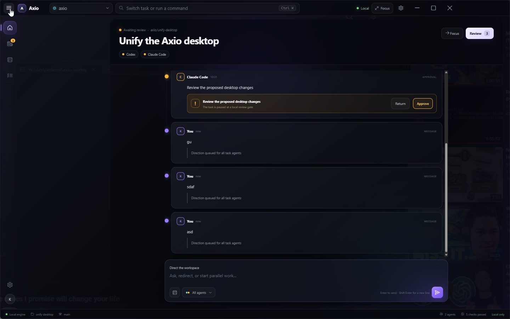
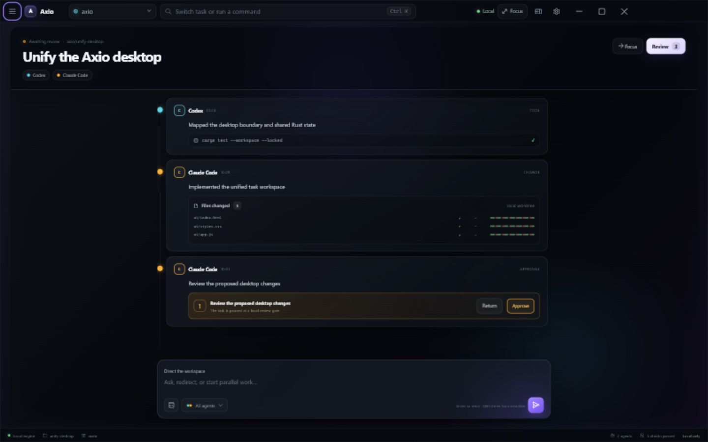

Axio collapsed-navigation QA
The reported dead left column compared with the corrected reactive canvas.
Before · redundant rail and reserved sidebar width

After · two titlebar toggles and reclaimed canvas
